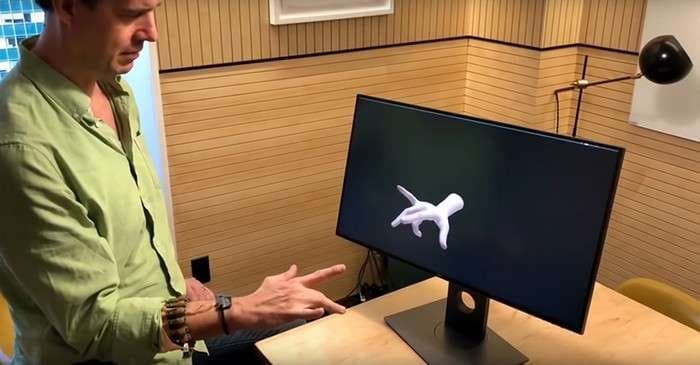
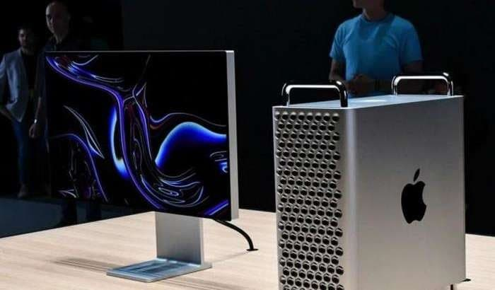

KOMPYUTERNI FIKR KUCHI BILAN BOSHQARISH STARTAPINI FACEBOOK SOTIB OLDI
O'tkan yili Qozog'istonlik maktab o'quvchisi fikr kuchi bilan boshqaruvchi mashina ixtiro qilgan edi. Umuman dunyo miqyosida fikr kuchidan amaliy foydalanish bo'yicha turli tadqiqotlar olib borilmoqda.
Batafsil

NARXI UY BILAN BAROBAR KOMPYUTER YANGICHA KORPUSDA, YANADA QIMMATLASHIB CHIQDI
O'tkan yili 3 iyunida Apple yangi avlod Mac Pro statsionar kompyuterini taqdim etgan edi. Tashqi ko'rinish sababli ijtimoiy tarmoqlarda ko'plab masxaralarga sababchi bo'lgan , ushbu qurilma dekabrda savdoga qo'yilgan lekin...